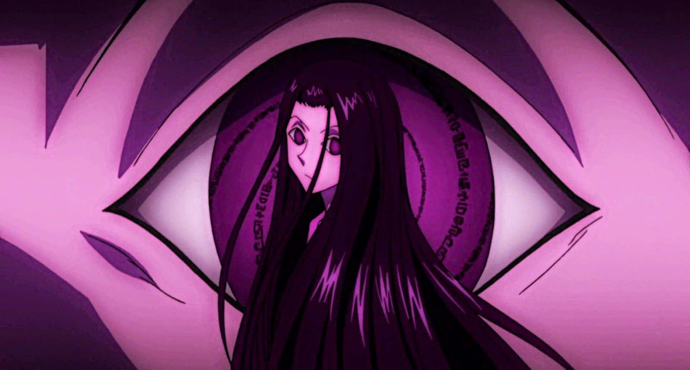

Illumi Zoldyck
Illumi Zoldyck, a member of the infamous Zoldyck family of assassins, is a cold and calculating individual with a mastery of Nen and manipulation. His ability, *Needle People*, allows him to control others by inserting Nen-infused needles into their bodies, turning them into obedient puppets. Illumi’s emotionless demeanor and unwavering focus on his missions make him a terrifying and efficient killer. While Illumi and Hisoka share a complex relationship, often collaborating due to their mutual interests, they have never engaged in a full-scale battle in the series. However, their dynamic is filled with tension, as both are highly skilled and unpredictable fighters. A hypothetical fight between them would be a fascinating clash of styles: Illumi’s precise and methodical approach against Hisoka’s chaotic and improvisational combat tactics. Their shared history and mutual respect would add layers of intrigue to such a confrontation, making it a battle of wits, strategy, and sheer Nen prowess. Fans often speculate about the outcome, as both characters are among the most formidable in the *Hunter x Hunter* universe.
